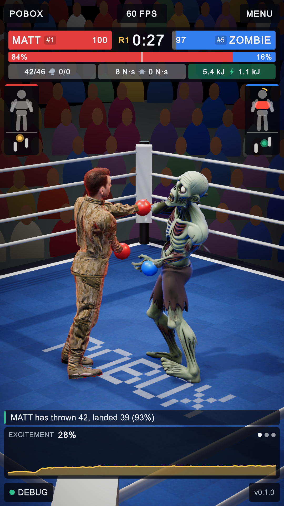
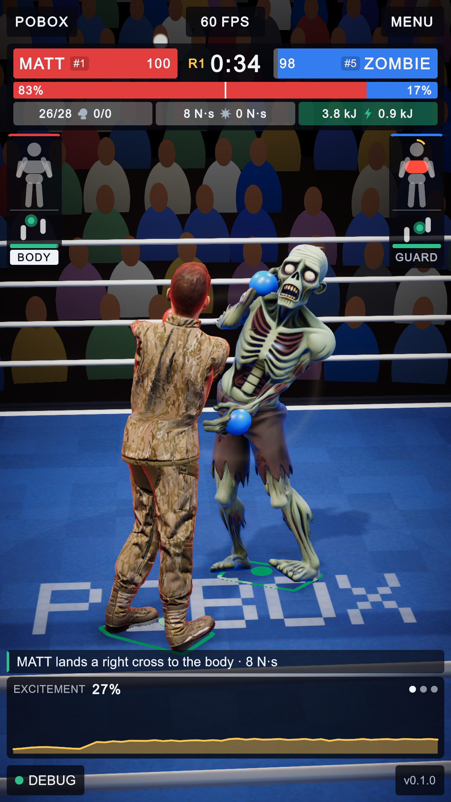
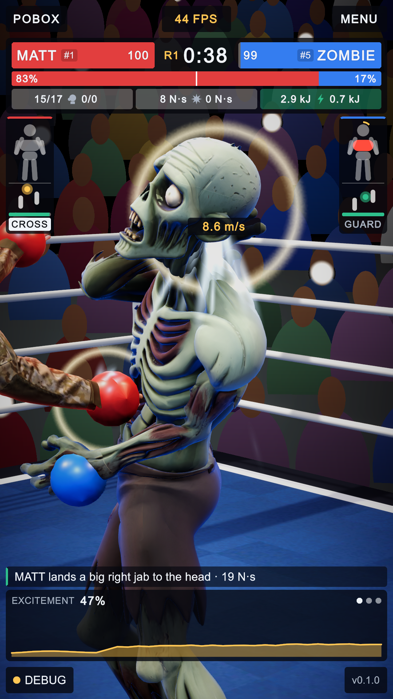
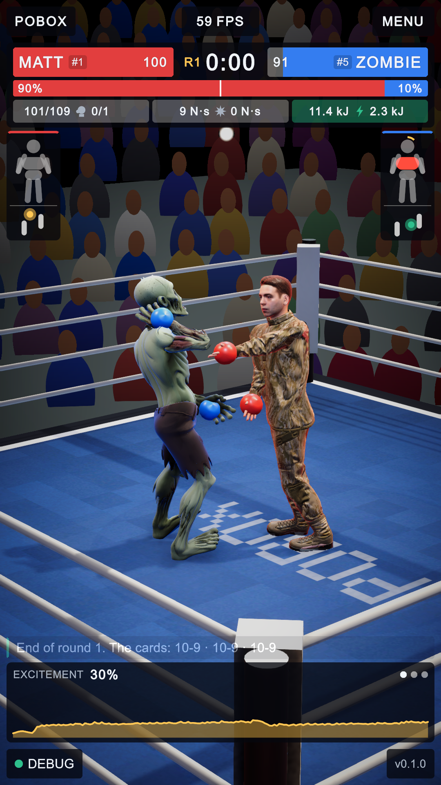
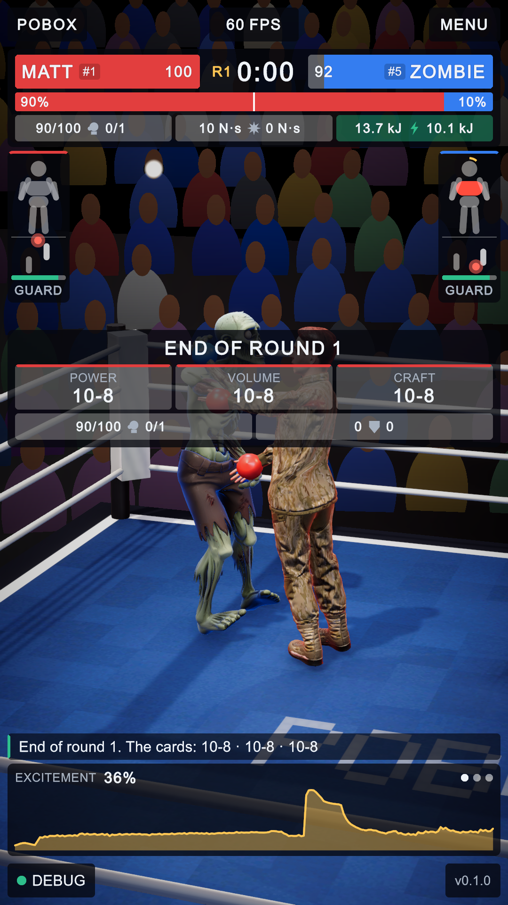
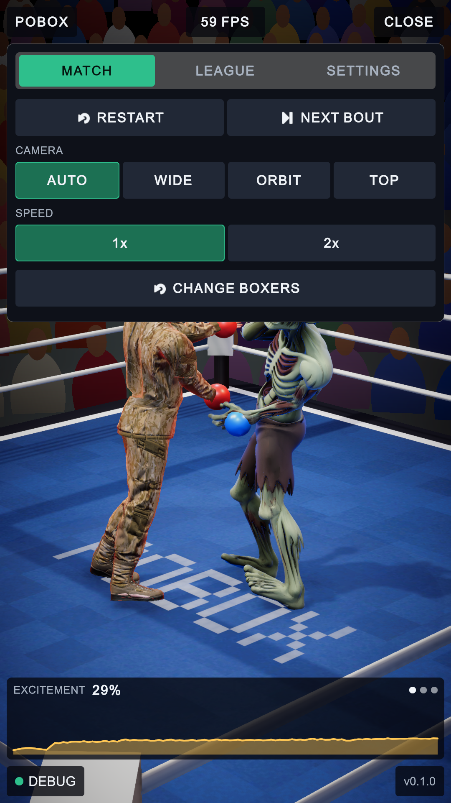
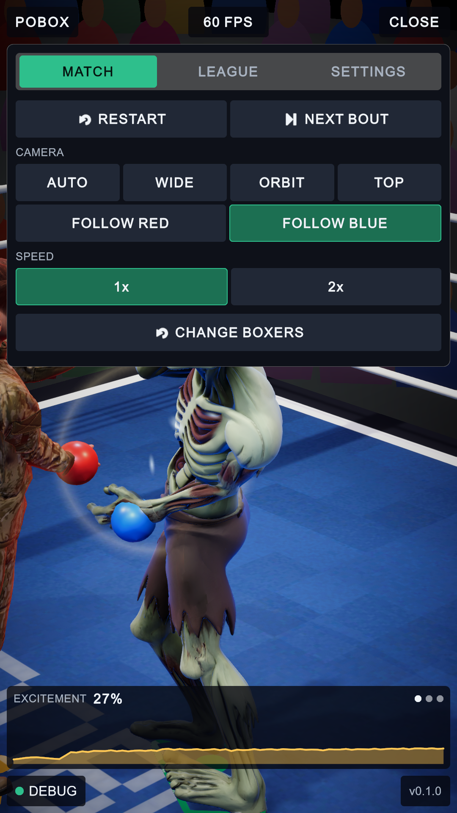
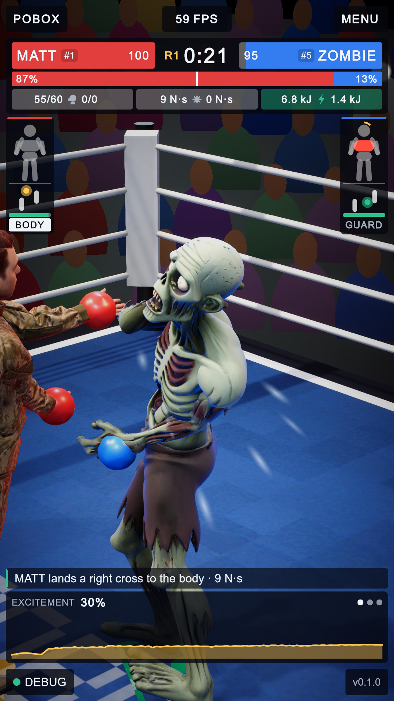
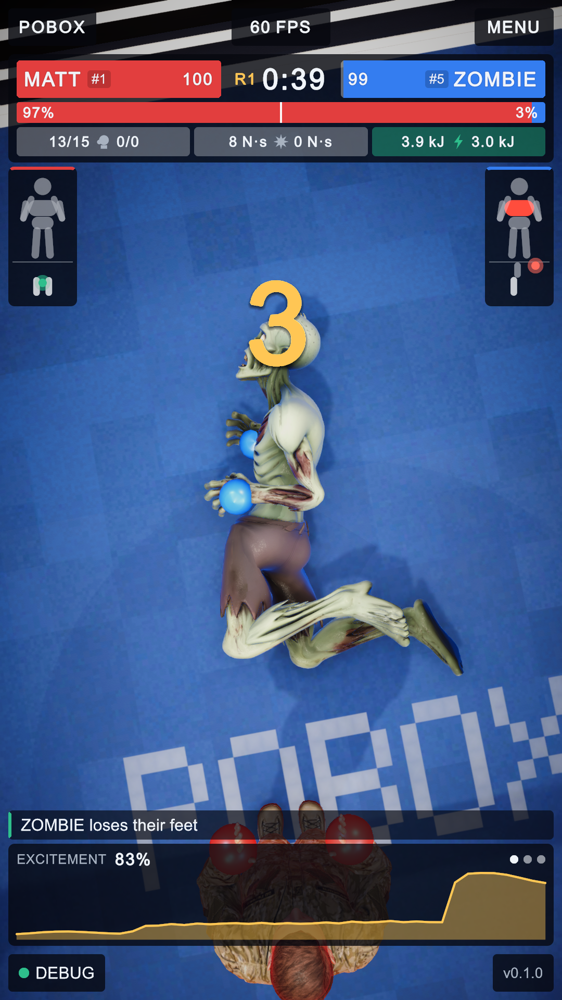
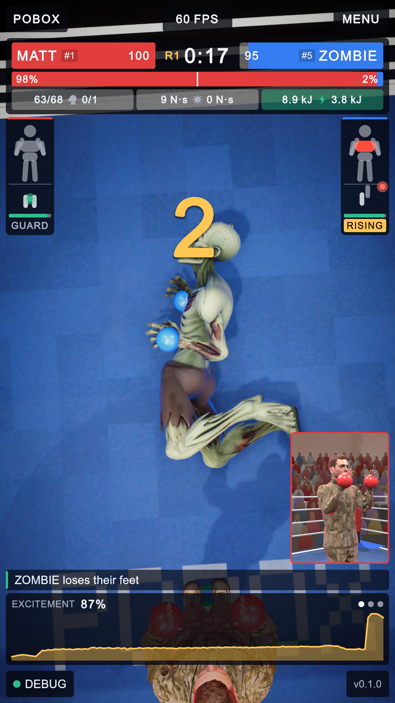

Broadcast telemetry: five additions to the arena, and a steadier announcer
3 October 2026 · every picture is the arena rendered at 1080 x 1920 with the HUD laid over it, Matt against Zombie · numbered pins mark what changed
Five things were added to the fight screen: a tank bar and an action badge in each boxer's pod, the judges' cards at the round break, a camera that can be locked on one boxer or turned by hand, each boxer's balance drawn on the canvas with the speed of a hard punch written where it lands, and an inset of the standing boxer during a count. The announcer's jaw was also smoothed.
The one-screen audit reports nothing off screen, scrolling, too small or clipped in every state pictured here, and all 28 play-mode tests pass.
1. The pods: tank and action badge · 4. balance on the canvas


12 3- Tank. A bar under each balance gauge: the boxer's stamina, green, amber under 35%.
- Action badge. What the boxer is doing this moment: GUARD, the punch just thrown (JAB, CROSS, HOOK, UPPER, BODY), DAZED, DOWN or RISING. Punches are white; dazed, down and rising are amber.
- Balance on the canvas. Under each boxer, the outline of the patch its planted feet cover and a dot at its capture point. Green, amber and red mean the same as in the pod's gauge.
4. The speed of a hard punch

1- Glove speed. A clean punch at least a quarter harder than these two usually land has its speed written where it landed, for under a second. This picture was made by raising a 19 N·s hit by hand: in this pairing real punches rarely pass the mark.
2. Between rounds: the cards and the round's numbers


123- Round card. Shown for the three-second break, where there used to be only the caption.
- The three judges. Each card as it stands, red's score first, edged in the colour of the corner it favours.
- The round alone. Punches landed of thrown, and punches stopped on the guard, in the round just ended (the scoreboard above shows the whole bout).
3. Camera: follow one boxer, or turn the orbit by hand


1
2- FOLLOW RED and FOLLOW BLUE. A new row in the camera section; the menu page is 96 px taller to hold it. AUTO gives the cameras back.
- The locked shot. The close-up camera stays on that boxer and no longer jumps to whoever was hit.
Turning the orbit. A sideways drag on the picture puts the orbit camera on air and turns it; it stays where it was put for three seconds, then walks on. A move under 24 px is ignored, so a tap does not take the cameras. This was checked with synthetic pointer events, not with a finger on a phone.
5. During a count: the standing boxer in an inset


12- Inset. A second camera on the boxer left standing, framed in that boxer's corner colour. It renders only while the referee counts.
- Badge. The downed boxer's badge reads DOWN, then RISING once it starts to get up.
The announcer's jaw
The jaw used to chase the loudness of a 5 ms slice of the sound, which rides on the wave itself, at a fixed speed. It now reads about 23 ms of the recording, a little ahead of what is being heard, and eases towards it. It opens against the loudest the voice has been rather than a fixed mark, so it no longer sits wide open through a whole word.
| Four seconds of "red corner, Matt, blue corner, Zombie" | Before | After |
|---|---|---|
| Sharp reversals of the jaw a second | 11.3 | 0.5 to 0.8 |
| Change of jaw speed from one frame to the next (share of full opening) | 0.115 | 0.015 |
| Widest opening reached | 1.00 (pinned there) | 0.82 to 0.86 |
| Frame time while it speaks | 16.7 ms | 16.6 ms |
jawSmoothSeconds on the announcer (0.07; it is also how far ahead the voice is read).Where it is
| What | Where |
|---|---|
| Tank, badge, round card, inset, punch speed, drag | Assets/Scripts/Runtime/UI/HudView.cs, Assets/UI/Hud.uxml, Assets/UI/Theme.uss |
| Follow, hand-turned orbit, the inset's camera | BroadcastDirector.Focus, TurnOrbit, pipCam |
| Balance on the canvas | Assets/Scripts/Runtime/Fx/BalanceMarks.cs; Fighter.Support, Fighter.CapturePoint |
| In the arena scene | Cameras/PiP Camera, Decals/Balance Marks Red and Blue; Assets/UI/Pip.renderTexture, Assets/Settings/BalanceMarks.mat |
| Announcer's jaw | Assets/Scripts/Runtime/Announcer/TeethAnnouncer.cs |